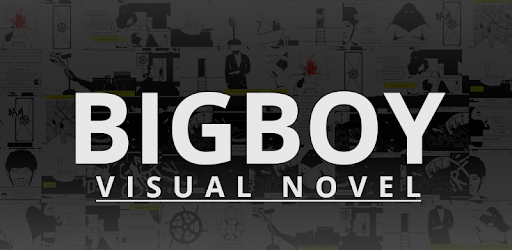
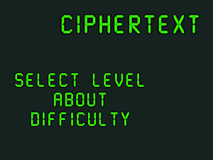
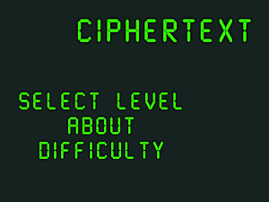
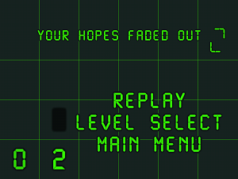
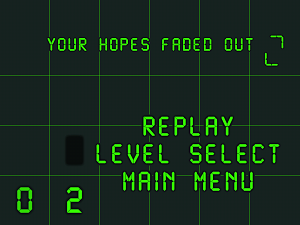

ozguz.mete@gmail.com
ozguz.mete@gmail.com
mobile: +1 343 598 4300
# METE OZGUZ
## Executive Summary
* 10 years project/team management experience
* PMP, OCP, AWS Certification
* Hand-on experience in oracle database
* Proficient in JavaScript, Java, Powerbuilder
## Products
### Round Animals
Teach animals to your toddlers and your preschoolers in a fun and engaging way!


### BigBoy - Visual Novel
No crime will go unpunished! An evil price...
Witness to the sections of BigBoy's life sucked into a vortex of crime. Is there divine justice?
This is the prologue of the story.
An adaptation from the original story of Emre Özgüz.



 ### Ciphertext
Move to the adjacent safe square/s using the information based on the number of mines around you. Use your logic and memory to complete 40 unique levels.
Can't find a way out? Use your abilities: move diagonally or meditate to get detailed information about the number of mines around you. There are portals to make things harder too!
Push the limits of your memory by adjusting the difficulty level.
Collect clues by completing levels and try to decrypt the ciphertext.
### Ciphertext
Move to the adjacent safe square/s using the information based on the number of mines around you. Use your logic and memory to complete 40 unique levels.
Can't find a way out? Use your abilities: move diagonally or meditate to get detailed information about the number of mines around you. There are portals to make things harder too!
Push the limits of your memory by adjusting the difficulty level.
Collect clues by completing levels and try to decrypt the ciphertext.
 


 


 ## Badges
Junior Programmer Unity Learn
## coursera Completed Courses-
Michigan State University
◼ Principles of Game Design ◼ Game Development for Modern Platforms
◼ Introduction to Game Development ◼ Business of Games and Entrepreneurship
## Education
Master of Science
in
Computer Science
2020
## Languages
Turkish English French
## Awards
Expression Recognition based on Facial Anatomy (109E061)
The Scientific and Technological Research Council of Turkey (TUBITAK) Scholarship,
2009 - 2011
## Publications
Numerical Integration Methods for Simulation of Mass-Spring-Damper Systems
Sep 29, 2011 Springer, London
## Contact Information
ozguz.mete@gmail.com +905533807849
## Working Experience
#### Current Company (Project Manager, 2015/08 - present)
* Lead team of 10 to oversee conception, requirement gathering, documentation and rollout.
* Conduct troubleshooting, analysis and support. Gather user feedback, document bugs and change requests.
#### Second Company (System Analyst, 2011/06 - 2015/07)
* Led team of 5 for application development
* Coordinated with developers, support staff and vendors across Hong Kong, China, Taiwan
#### My first Company (Analyst Programmer, 2005/01 - 2011/05)
* Develop multiple applications using Javascript, Java, PHP, Powerbuilder, Oracle
## Projects
* [Casual-Markdown](https://github.com/casualwriter/powerpage) - a lightweight markdown parser
* [Powerpage](https://github.com/casualwriter/powerpage) - a lightweight browser for html applications
## Education & Qualifications
* AWS Certification (2021/12)
* Oracle Certified Professional (2020/02)
* Project Management Professional (PMP) (2018/10)
* Bachelor of Computer Science (Sep 2004)
* The Chinese University of Hong Kong (2000 - 2004)
## Misc. Information
* Languages: English (good), Cantonese (fluent/native), Mandarin (good)
* Availability: 1 month's notice
## Badges
Junior Programmer Unity Learn
## coursera Completed Courses-
Michigan State University
◼ Principles of Game Design ◼ Game Development for Modern Platforms
◼ Introduction to Game Development ◼ Business of Games and Entrepreneurship
## Education
Master of Science
in
Computer Science
2020
## Languages
Turkish English French
## Awards
Expression Recognition based on Facial Anatomy (109E061)
The Scientific and Technological Research Council of Turkey (TUBITAK) Scholarship,
2009 - 2011
## Publications
Numerical Integration Methods for Simulation of Mass-Spring-Damper Systems
Sep 29, 2011 Springer, London
## Contact Information
ozguz.mete@gmail.com +905533807849
## Working Experience
#### Current Company (Project Manager, 2015/08 - present)
* Lead team of 10 to oversee conception, requirement gathering, documentation and rollout.
* Conduct troubleshooting, analysis and support. Gather user feedback, document bugs and change requests.
#### Second Company (System Analyst, 2011/06 - 2015/07)
* Led team of 5 for application development
* Coordinated with developers, support staff and vendors across Hong Kong, China, Taiwan
#### My first Company (Analyst Programmer, 2005/01 - 2011/05)
* Develop multiple applications using Javascript, Java, PHP, Powerbuilder, Oracle
## Projects
* [Casual-Markdown](https://github.com/casualwriter/powerpage) - a lightweight markdown parser
* [Powerpage](https://github.com/casualwriter/powerpage) - a lightweight browser for html applications
## Education & Qualifications
* AWS Certification (2021/12)
* Oracle Certified Professional (2020/02)
* Project Management Professional (PMP) (2018/10)
* Bachelor of Computer Science (Sep 2004)
* The Chinese University of Hong Kong (2000 - 2004)
## Misc. Information
* Languages: English (good), Cantonese (fluent/native), Mandarin (good)
* Availability: 1 month's notice